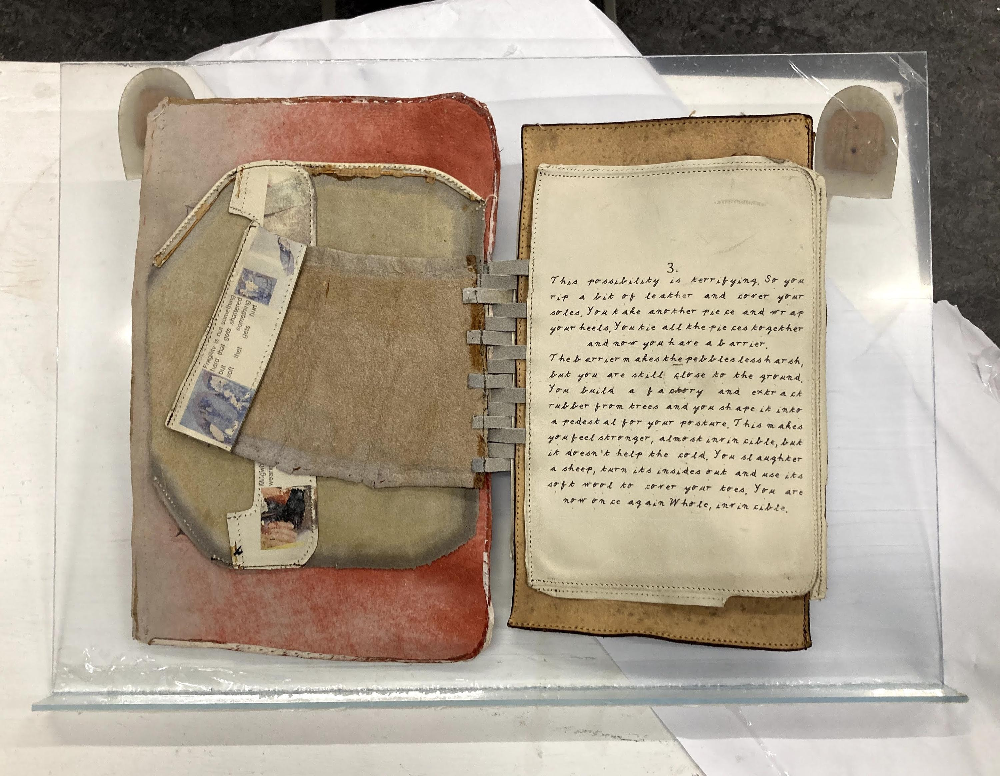

a book I printed on leather containing a short fictional story in 5 chapters about feet and the invention of shoes.
https://vimeo.com/514650168

“1.
(Standing upright, two feet next to each other)
In the beginning, you know no better. The elements are there, warmth transforms into coldness, you don’t know how to name any of it. Somebody is licking the placenta off your foggy skin. The world is a circle, unbroken. Your thoughts flow in one direction, they pertain to your needs, they inform your next step, but not the one after that.
You are warm, and a circle.
(Standing upright, the weight shifts to your right foot, your left foot flees, your legs stand now parted)
The world shifted, cracks fill up and new ones emerge, you now know what the word ‘balance’ means.
2.
Waged a step outside, since there is now an ‘outside’ separate from ‘inside’, there is a ‘you’ separate from ‘me’. Another separation takes place as you walk on; flesh separates from flesh. A sharp stone cuts a ribbed line in your big toe, a drop of blood escapes. There is now a loss, not only of that drop, but of the border of your once-continuous skin. You are not sure anymore if you can keep everything inside your borders, you are afraid to lose more.
3.
This possibility is terrifying. So you rip a bit of leather and cover your soles. You take another piece and wrap your heels. You tie all the pieces together and now you have a barrier. The barrier makes the pebbles less harsh, but you are still close to the ground. You build a factory and extract rubber from trees and you shape it into a pedestal for your posture. This makes you feel stronger, almost invincible, but it doesn’t help the cold. You slaughter a sheep, turn its insides out and use its soft wool to cover your toes. You are now once again Whole, invincible.
4.
Centuries have passed and you are growing weary of your armour. The shoes you’ve been wearing absorb the impact you fear to subject your feet to, they grow old instead of you. The stitching is starting to let go.
You realise that trying to preserve something soft will eventually make it tough too, tough in the wrong places. Callouses cover your heels, make walking painful. Your ankles become weak, not knowing how to hold themselves after being held for so long.
The fear of loss that made you build the barrier transforms into a fear of losing that barrier. Who are you without it?
You muster the last bits of boldness you posses and you deconstruct. You start removing the layers of glue & hardness & leather & thread & cloth & rubber to give yourself bare once again. At mercy of the elements, maybe even more helpless than when it all began, this time around it’s your choice.
5.
“Put off thy shoes from thy feet, for the place whereupon thou standest is holy ground” You throw yourself on your knees before God. You know now that there is nothing you could take with you, there is nothing that could ever save you. You are at peace with that, so you give all. There is no difference anymore between the dirt from underneath your feet or the cleanliness of your hands, no difference between a strangers body and your own. You take care of both evenly, but you aren’t afraid to lose either anymore. “